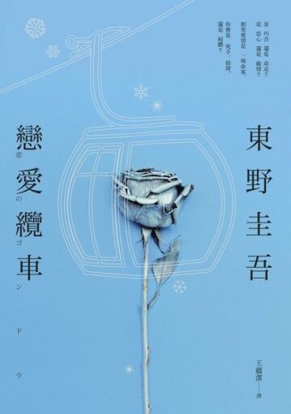
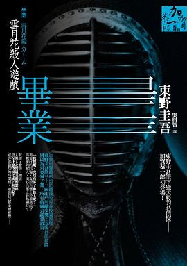

東野圭吾
-
作家生涯
1958年出生於大阪府大阪市，畢業於大阪府立阪南高等學校、大阪府立大學工學部電氣工學科（電氣工程系）。
學生時代開始接觸推理小說，例如松本清張與小峰元。
東野圭吾於大學畢業後，原先於汽車零件供應商日本電裝擔任工程師，同時每天利用下班之後的時間寫小說，並且將把寫好的作品寄去參加江戶川亂步獎當作目標。
東野圭吾以27歲的年輕年齡獲得大獎，令其創作信心大增，
加上獲獎一事被所屬公司知曉，邊工作邊寫作的生活受到了一定影響，遂毅然於1986年3月辭職奔赴東京，開始了自己職業作家的道路。
-
風格
早期以校園推理起家
以縝密細緻的劇情佈局獲得「寫實本格派」美名
後期的創作逐漸突破傳統推理的框架
同時作品亦能兼具文學性和娛樂性，不停帶給讀者新鮮的閱讀感受。
具有理工基礎，曾表示受到想活用科學知識的念頭驅使而寫出科學推理系列。
有大量推理小說作品，目前為止曾在多個作品中登場的角色有加賀恭一郎、湯川學、天下一大五郎、竹內忍、新田浩介五人。
作品頗受影視界青睞，絕大多數長篇作品皆被改編成電影、電視劇或舞台劇。
-
主要作品
- 放學後(1985年)
- 學生街殺人(1987年)
- 鳥人計畫(1989年)
- 布魯特斯的心臟(1989年)
- 同級生(1993年)
- 操縱彩虹的少年(1994年)
- 名偵探的枷鎖(1996年)
- 嫌疑犯X的獻身(2005年)
- 黎明破曉的街道(2007年)
- 解憂雜貨店(2012年)
- 戀愛纜車(2016年)
- 祈念之樹(2020年)
-
小說封面

戀愛纜車
畢業 雪月花殺人遊戲
-
改編電影
解憂雜貨店電影版預告